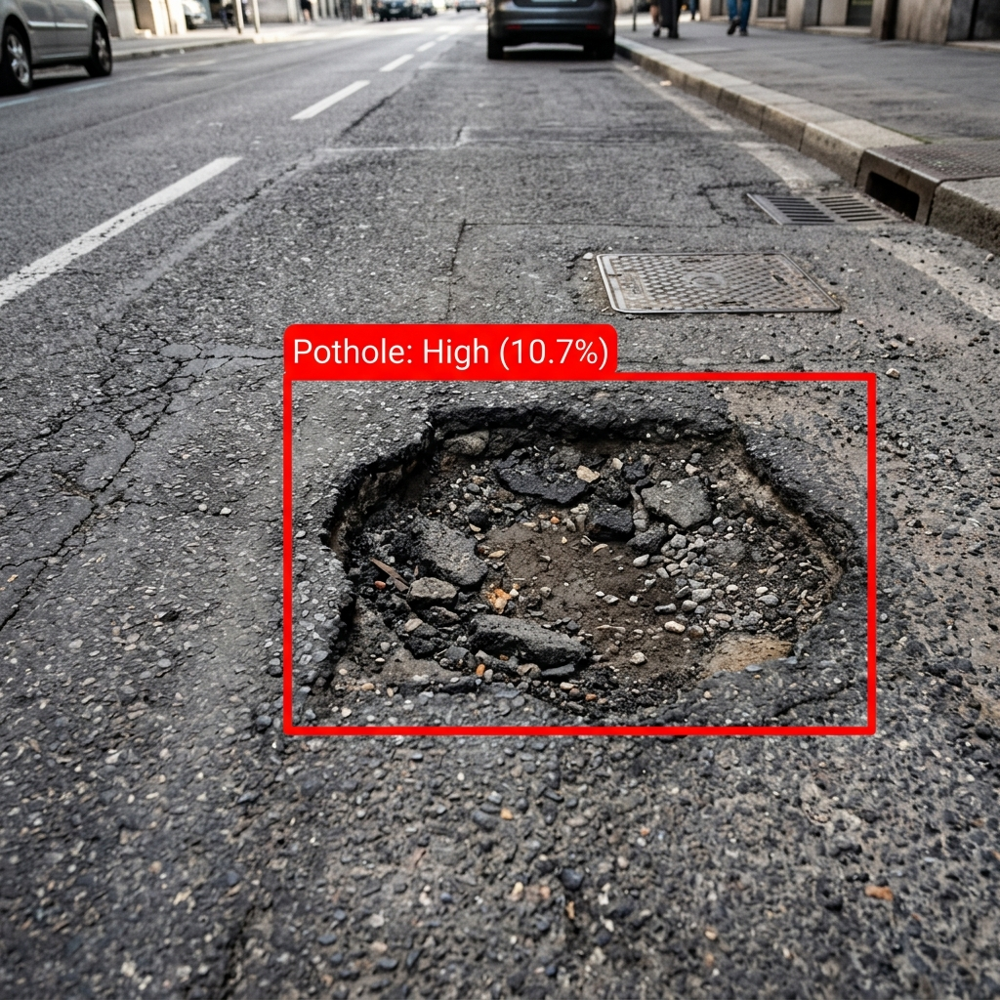
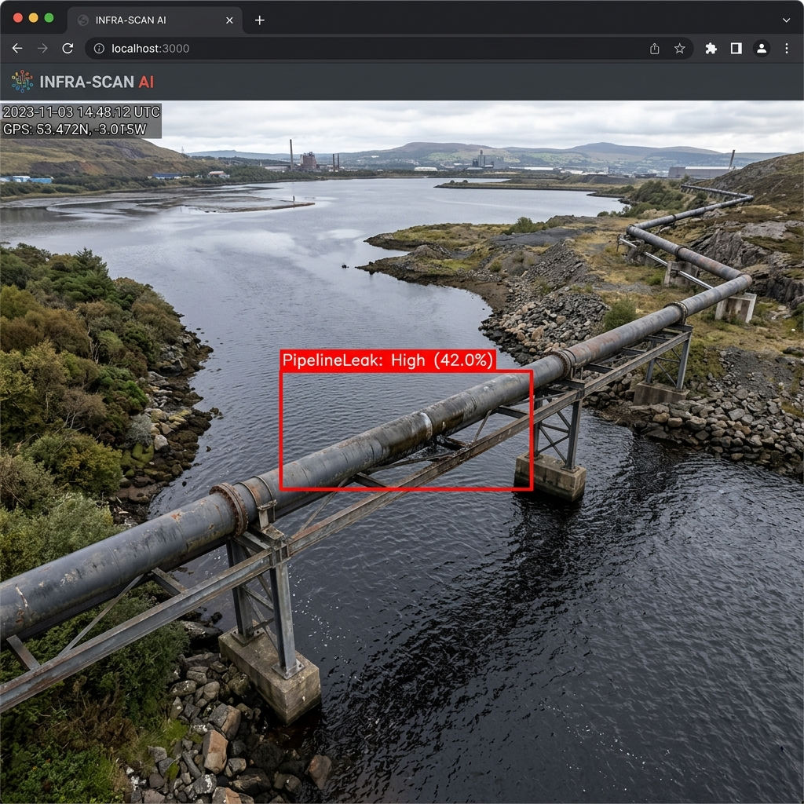
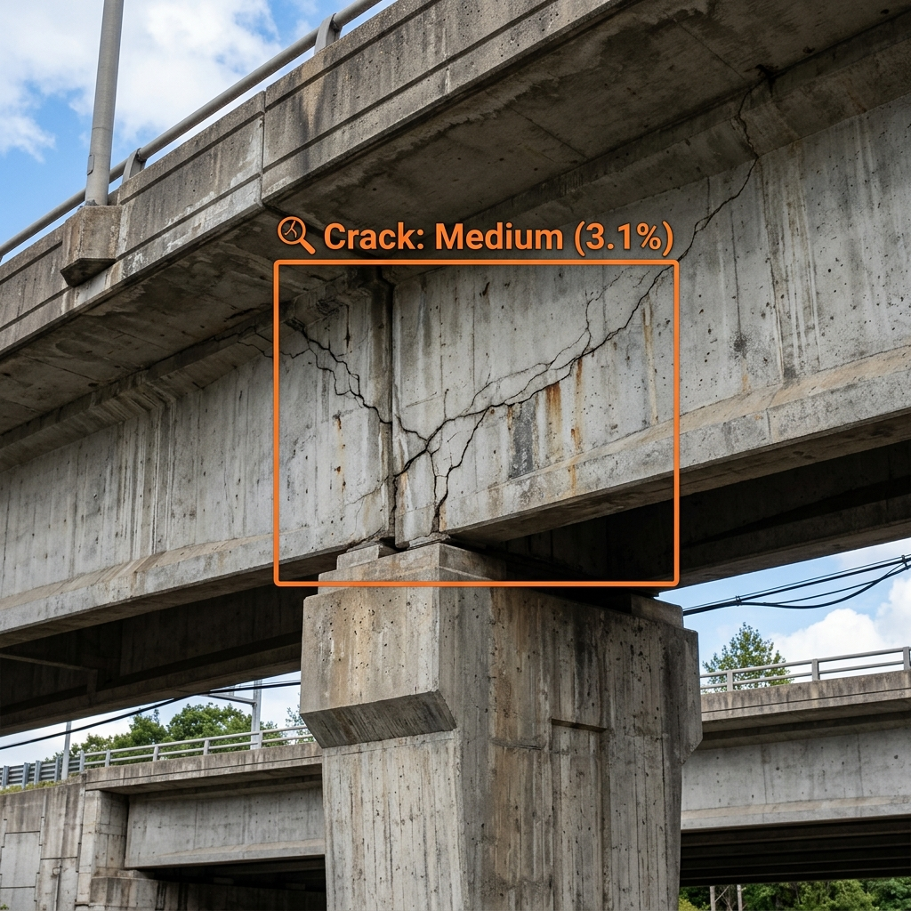

Pothole Detection
Computer vision mapping for urban road maintenance.
Launch Module
System AI has identified 3 minor anomalies across the northeast pipeline sector. No immediate intervention required.
Computer vision mapping for urban road maintenance.
Launch Module
Real-time pressure and structural integrity tracking.
Launch Module
Precision measurement of concrete and steel fatigue.
Launch Module